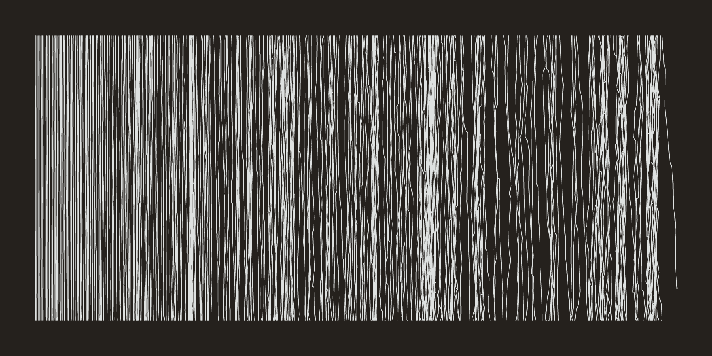
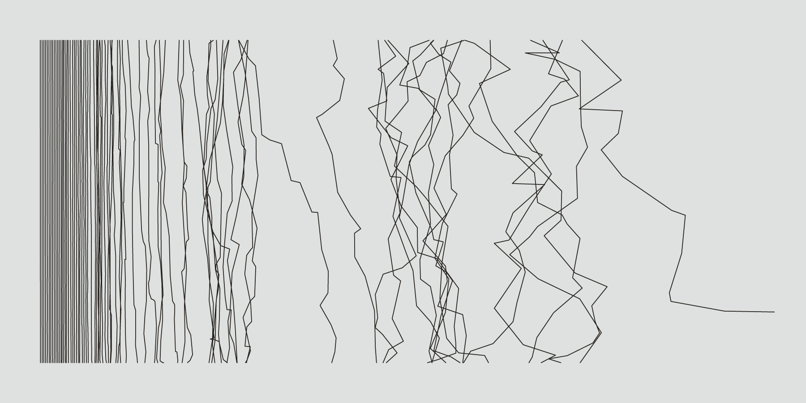
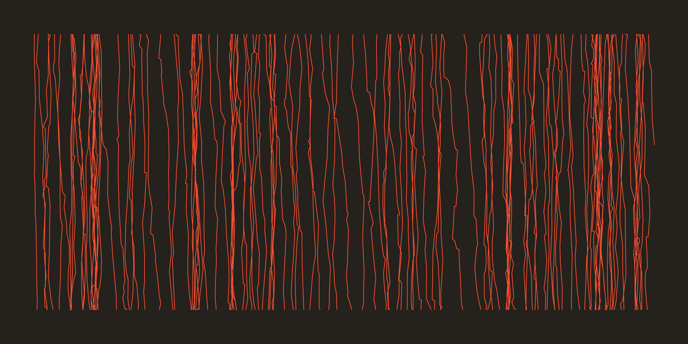

Procedurally-generated artworks (2017)
Linear compositions created with Processing and rendered with Adobe Illustrator. Related to the subsequent writing plots.



Linear compositions created with Processing and rendered with Adobe Illustrator. Related to the subsequent writing plots.


